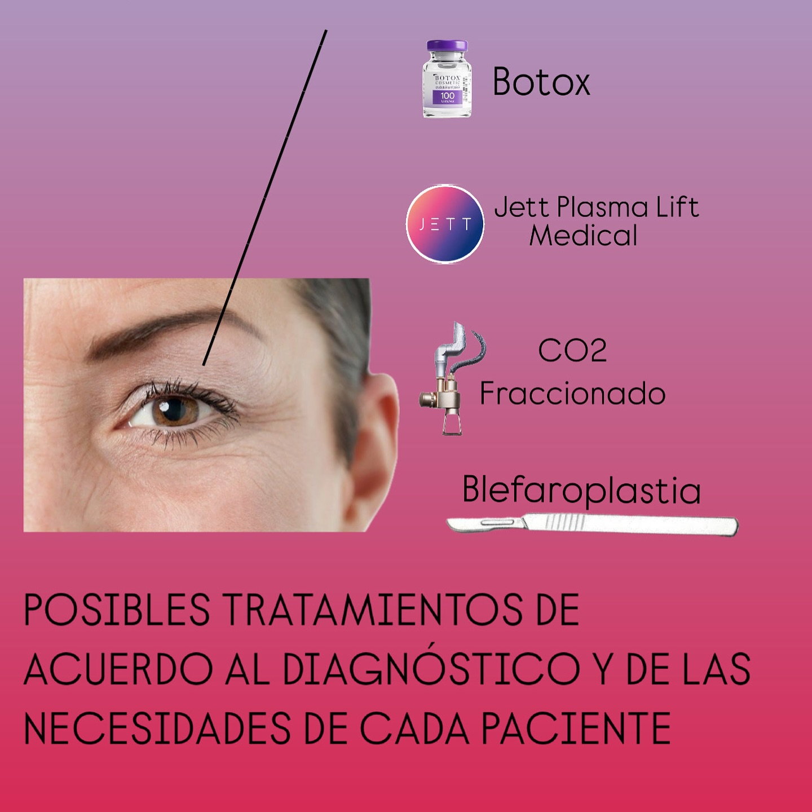
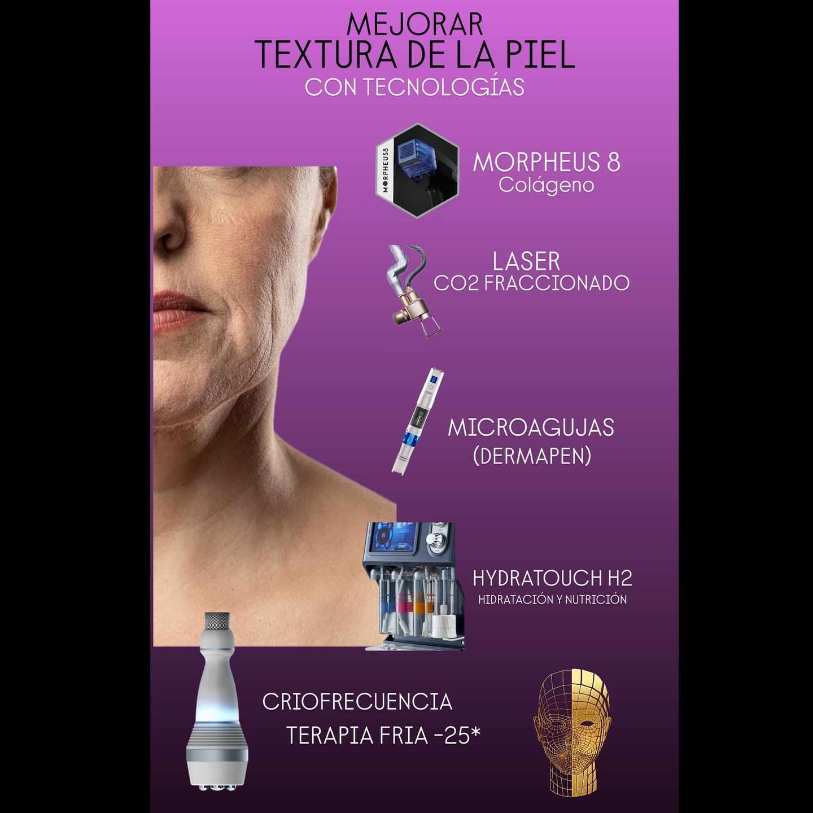
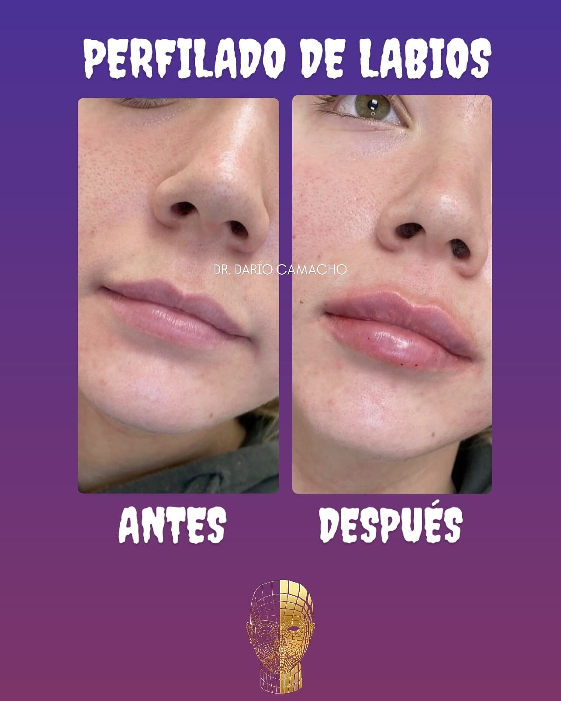

Our Procedures

Botox Injections
Botox is a non-surgical treatment that smooths out fine lines and wrinkles by temporarily paralyzing the muscles that cause them.

Dermal Fillers
Dermal fillers restore volume and fullness to the skin, smoothing out wrinkles and enhancing facial contours.
Laser Hair Removal
Laser hair removal offers a long-term solution for unwanted hair by using laser technology to target and destroy hair follicles.
Chemical Peels
Chemical peels improve skin texture and tone by removing the outer layer of dead skin cells, revealing a brighter complexion underneath.

Microneedling
Microneedling stimulates collagen production to improve skin texture and reduce the appearance of scars and wrinkles.

Botox Injections
Botox is a non-surgical treatment that smooths out fine lines and wrinkles by temporarily paralyzing the muscles that cause them.

Dermal Fillers
Dermal fillers restore volume and fullness to the skin, smoothing out wrinkles and enhancing facial contours.
Laser Hair Removal
Laser hair removal offers a long-term solution for unwanted hair by using laser technology to target and destroy hair follicles.
Chemical Peels
Chemical peels improve skin texture and tone by removing the outer layer of dead skin cells, revealing a brighter complexion underneath.

Microneedling
Microneedling stimulates collagen production to improve skin texture and reduce the appearance of scars and wrinkles.
Frequently Asked Questions
- What are aesthetic procedures? Aesthetic procedures are non-surgical or minimally invasive treatments designed to enhance or improve one's appearance. These include treatments like Botox, dermal fillers, chemical peels, and laser hair removal.
- Are aesthetic procedures safe? When performed by qualified and experienced professionals, aesthetic procedures are generally safe. It's essential to choose a certified practitioner and discuss any medical history or concerns before undergoing treatment.
- How long do the results of aesthetic procedures last? The longevity of results varies by procedure. For example, Botox effects typically last 3 to 6 months, while dermal fillers can last from 6 months to 2 years, depending on the type used..
- Do aesthetic procedures hurt? Most aesthetic procedures involve minimal discomfort. Practitioners often use topical anesthetics or ice to numb the area beforehand. Patients may feel a slight pinch or sting during the procedure.
- How should I prepare for my appointment? Preparation can vary by procedure, but general recommendations include avoiding blood thinners (like aspirin or alcohol) for at least 24 hours prior, staying hydrated, and discussing any medications or supplements with your provider.
- What can I expect during the recovery period? Recovery times differ depending on the procedure. Many aesthetic treatments have little to no downtime, allowing you to resume daily activities immediately. Some procedures may cause temporary swelling or bruising that typically resolves within a few days.
- Are there any side effects? While side effects are generally mild, they can include swelling, bruising, redness, or tenderness at the injection site. Serious complications are rare but can occur, so it’s crucial to discuss risks with your provider.
- How do I choose the right procedure for me? Consult with a qualified practitioner who can assess your needs, goals, and skin type. They can recommend the most suitable treatments based on your individual circumstances.
- Are the results of aesthetic procedures immediate? Some results, like those from Botox, may take a few days to become fully visible, while dermal fillers often provide instant results. Your practitioner will explain what to expect during your consultation.
- How much do aesthetic procedures cost? The cost of aesthetic procedures varies widely based on the type of treatment, the practitioner's experience, and geographical location. It's essential to discuss pricing during your consultation and inquire about any financing options.
- Can I combine different aesthetic procedures? Yes, many patients choose to combine procedures for enhanced results. Discuss your goals with your practitioner, who can create a tailored treatment plan to achieve the best outcomes.
- How often should I get aesthetic treatments? The frequency of treatments depends on the procedure and individual goals. Regular maintenance treatments, such as Botox or fillers, may be recommended every few months or as needed.
- Will I look unnatural after treatment? When performed by a skilled practitioner, aesthetic procedures can achieve natural-looking results. It's important to communicate your desired outcome during the consultation to ensure a satisfactory result.
- What is the difference between Botox and dermal fillers? Botox is a neuromodulator that temporarily relaxes muscles to reduce the appearance of wrinkles, while dermal fillers add volume to specific areas of the face, smoothing out wrinkles and restoring fullness.